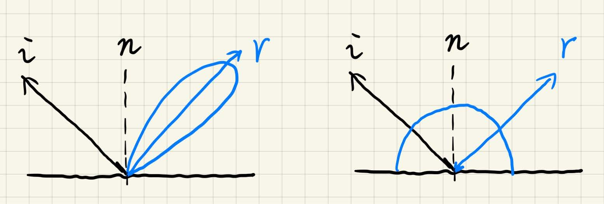
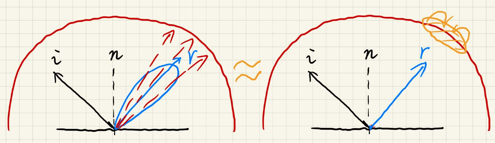
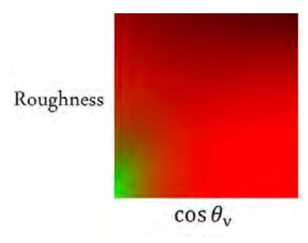
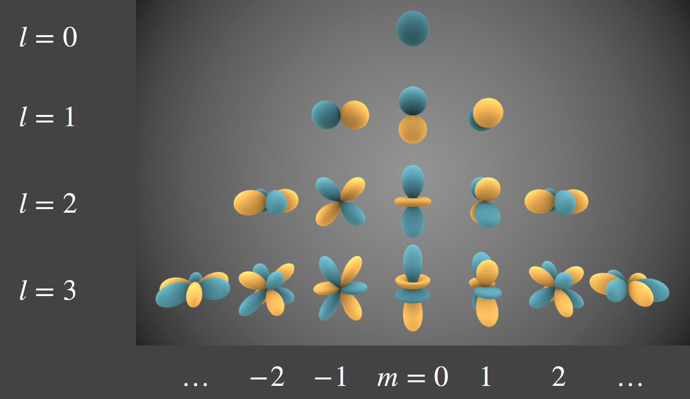
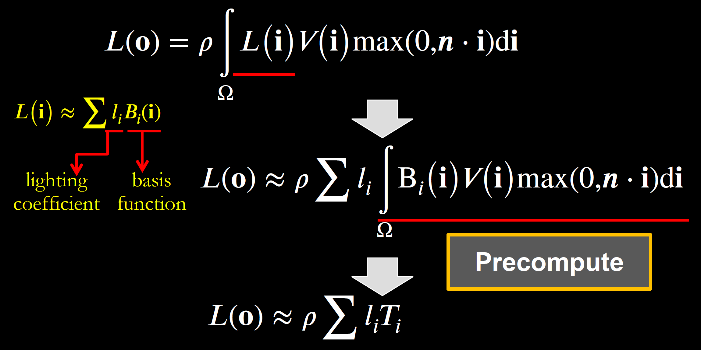
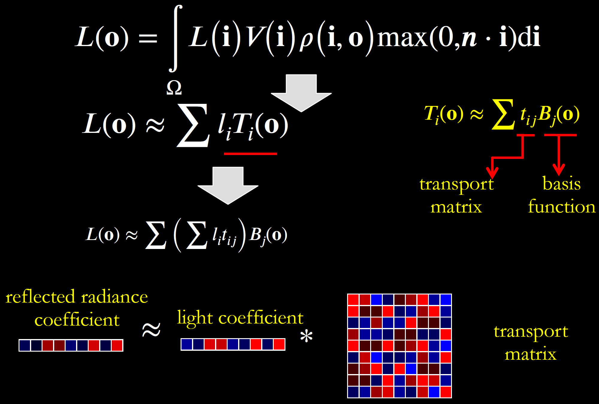
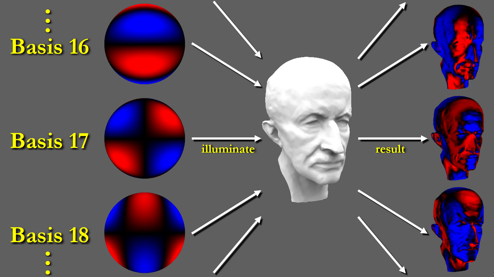
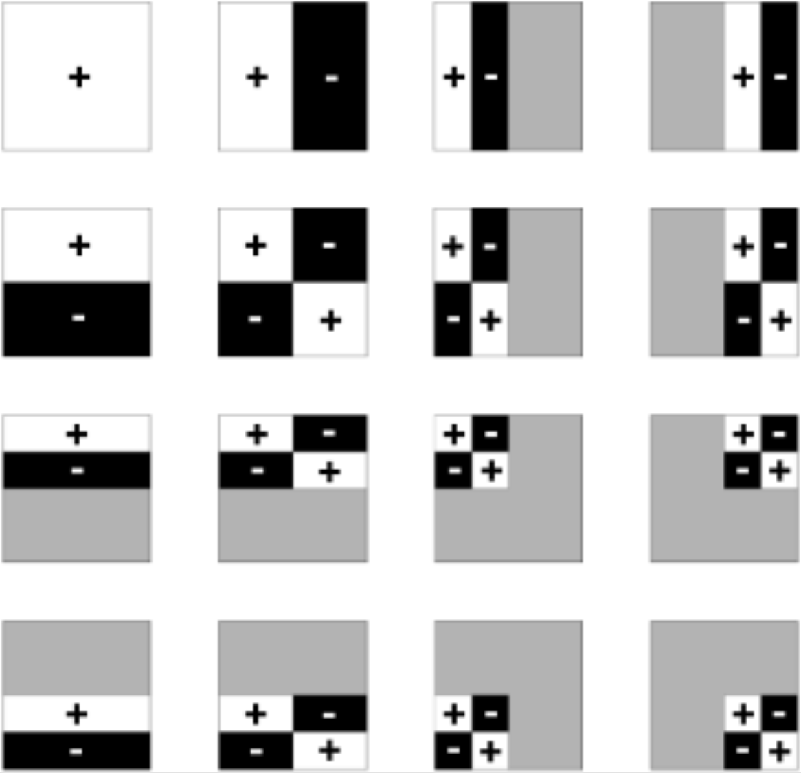
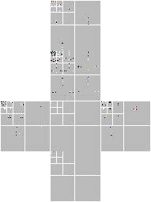

Lecture 5-6 Environment Lighting
Recap
- 环境光贴图
- 球面贴图 Spherical Map / 立方体贴图 Cube Map
Shading from Environment Lighting / Image-Based Lighting (IBL)
解渲染方程（不考虑阴影） \[ L_o(\mathrm p,\omega_o)=\int_{\Omega^+}L_i(\mathrm p,\omega_i)f_r(\mathrm p,\omega_i,\omega_o)\cos\theta_i\xcancel{V(\mathrm p,\omega_i)}\,\mathrm d\omega_i \]
- 蒙特卡洛积分——数值解、大量采样，非常慢 PS: 一旦涉及采样，就很难实时，近年开始有一些进展
观察：
- glossy BRDF : BRDF覆盖很小
- diffuse BRDF : BRDF覆盖大，但是平滑

因此考虑近似方法 \[ \int_\Omega f(x)g(x)\,\mathrm dx\approx\dfrac{\int_{\Omega_G}f(x)\,\mathrm dx}{\int_{\Omega_G}\,\mathrm d x}\cdot\int_\Omega g(x)\,\mathrm dx \] （该式在 \(g(x)\) 范围小/结果平滑时较为准确）
则有 \[ L_o(\mathrm p,\omega_o)\approx\dfrac{\int_{\Omega_{f_r}}L_i(\mathrm p,\omega_i)\,\mathrm d\omega_i}{\int_{\Omega_{f_r}}\,\mathrm d\omega_i}\int_{\Omega^+}f_r(\mathrm p,\omega_i,\omega_o)\cos\theta_i\,\mathrm d\omega_i \]
\(\dfrac{\int_{\Omega_{f_r}}L_i(\mathrm p,\omega_i)\,\mathrm d\omega_i}{\int_{\Omega_{f_r}}\,\mathrm d\omega_i}\) 表示对环境光贴图做模糊化处理，即滤波
- Prefiltering：在渲染之前就做好滤波
- 多种大小滤波核的结果，类似MIPMAP，计算时再做查询插值 【积分某区域的结果 = 先做区域的求和再取值】

\(\int_{\Omega^+}f_r(\mathrm p,\omega_i,\omega_o)\cos\theta_i\,\mathrm d\omega_i\) 部分则做预计算
eg. Microfacet BRDF : Fresnel + NDF + Shadowing-Masking 需要一个巨大的表（至少五维参数）
Fresnel : Schlick’s approximation \[ R(\theta)=R_0+(1-R_0)(1-\cos\theta)^5\\ R_0=\left(\dfrac{n_1-n_2}{n_1+n_2}\right)^2 \]
NDF : eg. Beckmann distribution \[ D(h)=\dfrac{e^{-\frac{\tan^2\theta_h}{\alpha^2}}}{\pi\alpha^2\cos^4\theta_h}\quad\text{$\alpha$:Roughness} \]
将半程向量与入射出射光夹角、法线与入射出射光夹角、入射出射光夹角的一半都近似认为是 \(\theta\) ，则减少至三维参数表
将Fresnel项写在原式中作近似： \[ \begin{aligned}&\int_{\Omega^+}f_r(\mathrm p,\omega_i,\omega_o)\cos\theta_i\,\mathrm d\omega_i\\ \approx& R_0\int_{\Omega^+}\dfrac{f_r}{F}(1-(1-\cos\theta_i)^5)\cos\theta_i\,\mathrm d\omega_i\\ +&\int_{\Omega^+}\dfrac{f_r}{F}(1-\cos\theta_i)^5\cos\theta_i\,\mathrm d\omega_i\end{aligned} \] 将基础反射率 \(R_0\) （Base Color）解放出来 -> 二维参数表
二维参数表：\(\text{Roughness}(\alpha) - \cos\theta\) 
这一方法称为 Split Sum （积分 -> 求和）
Precomputed Radiance Transfer, PRT
实时渲染中很难做到环境光下的阴影
- 把环境光看作大量光源：需要大量的shadow map
- 把问题看成一个采样问题：有不同的遮挡情况、不同的Visibility，Visibility项也不能用近似方法分离出来
- 一个解决思路：从最亮的光源下生成阴影（例如太阳）
- 相关工作
- Imperfect shadow maps
- Light cuts
- RTRT (might be the Ultimate Solution)
- PRT
Spherical Harmonics, SH 球面谐波函数
- 傅里叶级数：把一个函数拆成无数sin/cos函数（基函数）之和
- Filtering 滤波
- 形如 \(\int_{\Omega}f(x)g(x)\,\mathrm dx\) 可以视作滤波操作
- 低频信息 == 平滑的函数
- 积分后频率是两个相乘的函数中较低的那个
- 基函数：\(f(x)=\sum_ic_i\cdot B_i(x)\) ，则 \(B_i(x)\) 称基函数
SH：定义在球面上的一系列二维的基函数（理解为关于方向的函数，球面上的方向用 \(\theta\,\phi\) 描述）
很像一维的傅里叶级数  （颜色深度表示值，黄蓝表示正负？；l：阶数）
SH的基函数，用勒让德多项式表示（这里不必写出公式）
用基函数 \(B_i(\omega)\) 的线性组合，即可表示二维函数
基函数 \(B_i(\omega)\) 的系数用 \(f(\omega)\) 表示，则有 \[ c_i=\int_\Omega f(\omega)B_i(\omega)\,\mathrm d\omega \] （求系数的过程数学上称为“投影”）
用前 \(n\) 阶系数可恢复出近似的原函数， \(n\) 越大，保留系数越多
对Diffuse材质应用SH
Recall : Prefiltering of Envirnment Light Prefiltering + single query == No filtering + Multiple queries
Diffuse BRDF 很像低通滤波器（光照与BRDF做逐点相乘再积分，即Product Integrate）
考虑用少量SH来描述Diffuse BRDF（例如前3阶）
高频函数与低频函数Product Integrate，频率由低频函数决定 -> 既然Diffuse BRDF是低频的，那么光照也无需记录高频
考虑也用SH来描述来描述光照（例如前3阶）
非常简单的实现
surface float1 irradmat(matrix4 M, float3 v) { float4 n = {v, 1}; return dot(n, M*n); }
解决阴影、不限制Diffuse的方法：PRT
\[ L_o(\mathrm p,\omega_o)=\int_{\Omega^+}L_i(\mathrm p,\omega_i)V(\mathrm p,\omega_i)f_r(\mathrm p,\omega_i,\omega_o)\cos\theta_i\,\mathrm d\omega_i \]
Light、Visibility、BRDF三项均描述成球面函数
eg. 用Cubemap存时，每个shading point的计算量过大
考虑用SH来预计算部分内容
- 认为Light在场景中可变；Visibility、BRDF等无关项认为是Light Transport，不可变
- Light：用SH近似 \(L_i\approx\sum l_iB_i\)
- Light Transport：渲染之前做预计算
Diffuse情况 
运行时则只需要算点乘
但是Visibility项固定意味着场景不能动
Light：光源本身旋转不可用（后面会说可以计算）
重新理解
- Light : \(L(\omega_i)\approx\sum_pc_pB_p(\omega_i)\) Light Transport : \(T(\omega_i)\approx\sum_qc_qB_q(\omega_i)\)
- 则渲染方程 \[ L_o(\mathrm p,\omega_o)=\sum_p\sum_qc_pc_q\int_{\Omega^+}B_p(\omega_i)B_q(\omega_i)\,\mathrm d\omega_i \] 由于SH基函数正交，则仅当 \(p=q\) 时，右边积分结果有意义，否则为零。复杂度 \(O(n^2)\) 降低至 \(O(n)\) 。
SH的性质
- 基函数相互正交
- 易于计算投影（函数与任一基函数做Product Integrate即可）
- 易于计算旋转
- 相当于旋转每一个SH基函数
- SH基函数的旋转可以用同阶基函数的线性组合表示
- 打表格
- 易于卷积
- 少量基函数代表低频
把多次Bounce的过程也视作Light Transport，预计算，可实现GI
Glossy情况
Light Transport 包含Visibility和BRDF，对于给定的出射方向 \(\mathrm o\) ，BRDF都不一样 -> \(T_i(\mathrm o)\)
\[ T_i(\mathbf o)=\sum t_{ij}B_j(\mathbf o)\\ L_o\approx\sum l_iT_i(\mathbf o)\approx\sum\left(\sum l_i t_{ij}\right)B_j(\mathbf o) \]
对于不同的出射方向 \(\mathrm o\) ，得到一个Transport matrix。

- 代价：存储的Transport matrix，且一般用五阶SH，因此存储量大；且渲染需要计算向量与矩阵乘，相对复杂。
Transport Paths
- \(LE\) : Light -> Eye
- \(LGE\) : Light -> Glossy -> Eye
- \(L(D|G)^*E\)
- \(LS^*(D|G)^*E\) \(LSDE\) Caustics “焦散”（翻译不好）
- 可以预计算任意复杂的Light Transport
另一种理解 \(T_i\approx\int_{\Omega}B_i(\mathbf i)V(\mathbf i)\max(0,\mathbf n\cdot\mathbf i)\,\mathrm d\mathbf i\) 中，将 \(B_i(\mathbf i)\) 视作入射光，预计算过程就相当于用这些“奇怪”的光照渲染场景。

限制
- SH只适合描述低频信息（镜面反射）
- 固定场景
- 大量的预计算和存储
进一步的工作
- 新型基函数
- 两项点乘 -> 三项相乘
- 动态场景
- 动态材质
- 透明材质、头发、…
- 预计算 -> 不做预计算的解析解
- …
其他基函数
- 小波 Wavelet
- 二维小波 
- 投影
- 小波变换
- 大量系数为零 -> 用于压缩
- 全频率的表示
- 用Cubemap存储光照，6张图每张做小波变换
- 把低频存在图左上1/4，剩下3/4存高频，对低频的1/4图递归地做这样的操作 -> 发现高频信息很少，非常适合压缩 
- 问题：不支持快速旋转
- Zonal Harmonics
- Spherical Gaussian
- Piecewise Constant
- 小波 Wavelet